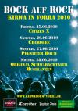

Termine 2010
- Januar
- Freitag, 02.01. um 20:00 Uhr: Jahreshauptversammlung in der KBH.
- Februar
- Samstag, 13.02. ab 19:30 Uhr: Kappenabend in der Pizzaria Toni.
- Freitag, 19.02. ab 19:00 Uhr: Kirwaboumhütte hat geöffnet. Heute gibts: Bündle mit Kraut.
- Sonntag, 21.02.: SG Artelshofen Gemeindeschießen.
- März
- Samstag, 13.03. um 14:45 Uhr: Fahrt nach Neuhaus/Krottensee zum Gasthaus Schreg mit Musik. Treffpunkt am Bahnhof Vorra.
- Freitag, 19.03. ab 19:00 Uhr: Kirwaboumhütte hat geöffnet. Heute gibts: Geräucherten Backstakäs.
- April
- Freitag, 16.04. ab 19:00 Uhr: Kirwaboumhütte hat geöffnet. Heute gibts: Stadtwurst mit Kraut.
- Sonntag, 25.04. um 10:00 Uhr Weißwurstfrühschoppen mit Weizen vom Fass in der Kirwaboumhütte.
- Mai
- Freitag, 21.05. ab 19:00 Uhr: Kirwaboumhütte hat geöffnet. Heute wird gegrillt.
- Montag, 24.05. um 8:00 Uhr: Fahrt zur Hansgörgl Kirwa. Treffpunkt am Bahnhof Vorra.
- Juni
- Von 25. bis 28.06. ist Kirwa! 
Die Musik steht schon fest:
Freitag: Citizen X
Samstag: Cherokee
Sonntag: Pegnitzer Boum
Montag: Orginal Schwabachtaler Musikanten - Juli
- Freitag, 16.07. ab 19:00 Uhr: Kirwaboumhütte hat geöffnet.
- August
- Freitag, 13.08. ab 19:00 Uhr: Kirwaboumhütte hat geöffnet.
- Samstag, 21.08. um 09:00 Uhr: Tagesausflug zur Sand-Kerwa mit Jugend-Fischerstechen nach Bamberg. Treffpunkt Bahnhof Vorra.
- September
- Freitag, 17.09. ab 19:00 Uhr: Kirwaboumhütte hat geöffnet.
- Oktober
- Samstag, 16.10. ab 19:30 Uhr: Bier- und Weinfest in der Kirwaboumhütte.
- Freitag, 22.10. ab 19:00 Uhr: Kirwaboumhütte hat geöffnet. Heute gibts: Brathering mit Kartoffeln.
- November
- Samstag, 20.11. um 18:30 Uhr: Nachtwanderung zum Schinkenessen bei Pechwirt. Treffpunkt am Rathaus.
- Freitag, 26.11. ab 19:00 Uhr: Kirwaboumhütte hat geöffnet. Heute gibts: Geräuchertes.
- Dezember
- Samstag, 11.12. ab 19:30 Uhr: Weihnachtsfeier bei Toni.
- Samstag, 18.12. um 19:30 Uhr: Kirwawende mit Musik in der Kbh.
- Donnerstag, 23.12. um 18:00 Uhr: Nachtwanderung nach Großmeinfeld.
- Januar 2011
- Sonntag, 02.01.2011 um 20:00 Uhr: Jahreshauptversammlung in der Kbh.
{kind=link}
Termine vergangener Jahre:
2018
2017
2016
2015
2014
2013
2012
2011
2010
2009
2008
2007
2006